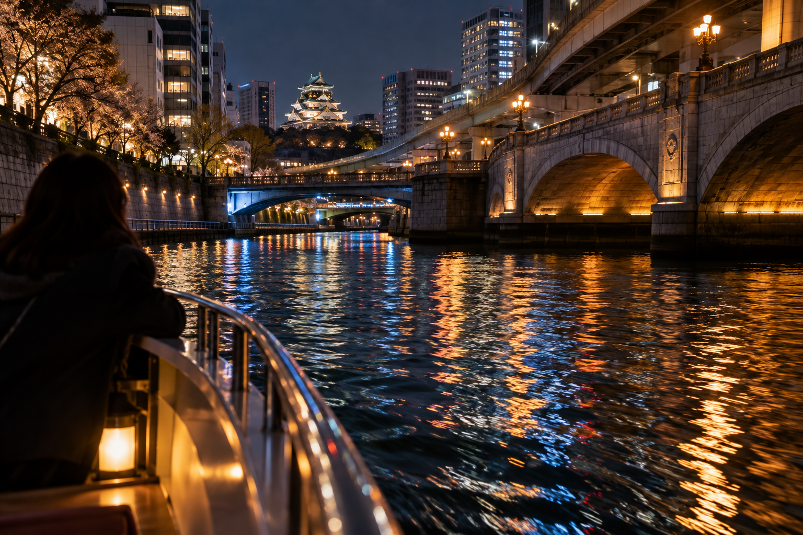
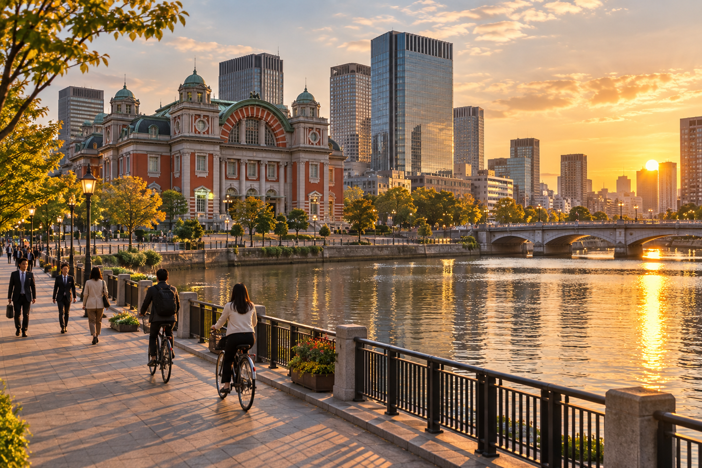
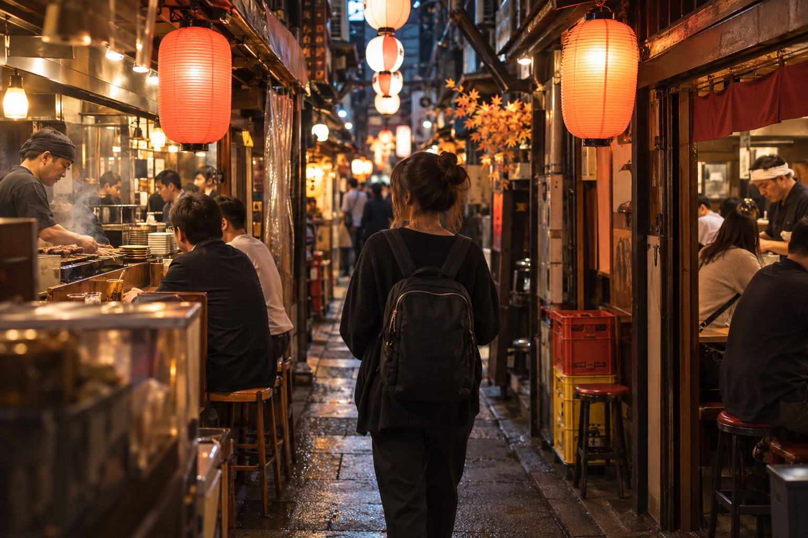

Osaka 3-Day Itinerary
Three full days in Osaka gives first-time visitors enough time to see the city's major highlights without compressing food, neighborhoods, history, and nightlife into two long sightseeing days. The best use of the third day is not simply adding more attractions. It is separating Osaka into clearer geographic areas so you spend less time crossing the city and more time experiencing each district.
This itinerary uses Day 1 for Osaka Castle, Nakanoshima, Kitahama, and Umeda, Day 2 for historic and southern Osaka around Sumiyoshi Taisha, Shitennoji, Tennoji, and Shinsekai, and Day 3 for a deeper Minami experience around Kuromon, Nipponbashi, Namba, Shinsaibashi, and Dotonbori.
The route assumes three complete sightseeing days. Arrival afternoon and departure morning should be treated separately. If you only have two full days, use the more compact Osaka 2-Day Itinerary instead of trying to squeeze this route into less time.
Osaka 3-Day Itinerary at a Glance

| Day | Route | Main Experience |
|---|---|---|
| Day 1 | Osaka Castle → Nakanoshima → Kitahama → Umeda → skyline | History, architecture and modern Osaka |
| Day 2 | Sumiyoshi Taisha → Shitennoji → Tennoji/Abeno → Shinsekai | Shrines, temples, southern Osaka and retro streets |
| Day 3 | Kuromon → Nipponbashi → Namba → Amerik amura → Shinsaibashi → Dotonbori | Food, pop culture, shopping and nightlife |
The important difference from a two-day trip is pace.
You no longer need to combine Shinsekai, Tennoji, Kuromon, Shinsaibashi, and Dotonbori into one long southern-Osaka day.
Instead:
- ✓Day 2 gets more cultural depth
- ✓Day 3 gives Minami enough time to breathe
- ✓Day 1 can be slower around Osaka Castle and the northern city
Who Is This Osaka 3-Day Itinerary for?
This route works best if:
- ✓It is your first visit to Osaka
- ✓You have three full days
- ✓You want both famous sights and neighborhood time
- ✓Food is part of the trip, not just a meal break
- ✓You enjoy city walking
- ✓You want evenings that are not overloaded with attractions
- ✓Universal Studios Japan is not included inside these three sightseeing days
If USJ is one of your priorities, count it separately.
For example:
3 days in Osaka including USJ
usually means:
2 city sightseeing days + 1 theme-park day
not three complete Osaka city days.
Is Three Days Too Much for Osaka?
No.
Three days is an excellent amount of time for a first visit.
It gives you enough time to experience:
- ✓Historic Osaka
- ✓Modern Osaka
- ✓Southern traditional areas
- ✓Retro neighborhoods
- ✓Food markets
- ✓Shopping
- ✓Pop culture
- ✓Dotonbori after dark
without making every day feel like a race.
Two Days Vs Three Days in Osaka
Choose two days if:
- ✓Osaka is one part of a fast multi-city Japan trip
- ✓You want only the major highlights
- ✓Kyoto receives more of your Kansai time
- ✓Shopping is not a major priority
Choose three days if:
- ✓Food matters
- ✓You enjoy neighborhoods
- ✓You want more than Dotonbori and Osaka Castle
- ✓You want a slower pace
- ✓Osaka is one of your main destinations
If you are still deciding how to split your wider trip, Tokyo, Kyoto and Osaka Itinerary: How to Divide Your Days can help you decide which city deserves the extra night.
Why This Route Is Different from the 2-Day Osaka Itinerary?
The two-day route has to combine more places.
The three-day version does not.
In the 2-Day Route
Southern Osaka includes:
- ✓Kuromon
- ✓Namba
- ✓Shinsekai
- ✓Tennoji
- ✓Shinsaibashi
- ✓Dotonbori
That works, but it creates a full day.
In This 3-Day Route
We separate them.
Day 2
Owns:
Sumiyoshi Taisha → Shitennoji → Tennoji → Shinsekai
Day 3
Owns:
Kuromon → Nipponbashi → Namba → Shinsaibashi → Dotonbori
That gives both sides more depth.
Where Should You Stay for This Route?
At a broad level, good bases include:
- ✓Namba
- ✓Shinsaibashi
- ✓Umeda
- ✓Tennoji
For three full days, I would give Namba/Shinsaibashi more weight if:
- ✓Food
- ✓Dotonbori
- ✓Nightlife
- ✓Evening walking
matter most.
Choose Umeda if:
- ✓Transport
- ✓Regional rail
- ✓Modern shopping
- ✓Kyoto/Kobe connections
matter more.
The detailed decision belongs in Where to Stay in Osaka: Best Areas for First-Time Visitors.
Do You Need Three Different Hotels?
No.
Use one base.
Osaka's transport is good enough that changing hotels would add unnecessary:
- ✓Packing
- ✓Luggage
- ✓Check-in
- ✓Check-out
without solving a real problem.
How Early Should You Start Each Day?
This itinerary does not require three exhausting sunrise starts.
A good pattern is:
Day 1
Start around 8:30–9:00 AM
Day 2
Start earlier for Sumiyoshi Taisha if you want a quieter shrine visit.
Day 3
Begin around the time Kuromon's shops are becoming active.
Osaka's evenings matter.
Protect enough energy to enjoy them.
Day 1: Osaka Castle, Nakanoshima, Kitahama and Umeda

Day 1 gives you the broadest introduction to Osaka.
The route is:
Osaka Castle → Nakanoshima → Kitahama → Umeda → Umeda Sky Building or another evening viewpoint
The day moves gradually from:
historic Osaka → riverfront Osaka → modern Osaka
This gives you several different sides of the city without crossing north and south repeatedly.
8:30–9:00 AM: Arrive at Osaka Castle Park
Begin in Osaka Castle Park.
The museum inside the main tower opens later than the park itself, so arriving around opening time lets you spend a few minutes enjoying the exterior before entering.
Use this first period for:
- ✓Castle views
- ✓Moats
- ✓Stone walls
- ✓Gates
- ✓Photography
The park is much larger than the main tower.
Do not arrive at the building, take one photograph, and assume you have seen the castle area.
9:00–11:00 AM: Osaka Castle
The castle is one of Osaka's main symbols and a logical first major attraction.
The present main tower is a reconstruction, with a museum inside explaining Osaka Castle's history and its connection with:
- ✓Toyotomi Hideyoshi
- ✓The unification period
- ✓Tokugawa rule
- ✓Battles
- ✓Later reconstruction
Should You Go Inside?
For a first trip:
yes, if Osaka history interests you.
The museum provides context that you do not get from exterior photographs alone.
However, travelers who:
- ✓Dislike museums
- ✓Have limited mobility
- ✓Plan to visit Himeji
- ✓Care mainly about photography
may choose to spend more time outside instead.
How Long Do You Need?
Around:
1.5–2 hours
for the main tower and nearby grounds is a useful starting point.
Add more time if:
- ✓History is a major interest
- ✓The park is especially beautiful
- ✓You visit during cherry blossom season
Do Not Compare Osaka Castle Only With Kyoto Temples
By this point in many Japan trips, travelers have recently visited Kyoto.
Osaka Castle provides a useful contrast.
Kyoto emphasizes:
- ✓Shrines
- ✓Temples
- ✓Historic streets
- ✓Gardens
Osaka Castle introduces:
- ✓Military history
- ✓Political power
- ✓Fortifications
- ✓Urban castle grounds
That difference is one reason it belongs early in the Osaka stay.
11:00 AM–12:00 PM: Castle Park and Outer Grounds
The third day in Osaka gives you enough time not to rush immediately away from the castle.
Use another hour flexibly for:
- ✓Moats
- ✓Stone walls
- ✓Park walking
- ✓Nishinomaru surroundings if relevant to your interests
- ✓Coffee
- ✓Seasonal scenery
You do not need every corner of the park.
The point is to give the area more time than the compact two-day itinerary allows.
Spring: Give Osaka Castle More Time
During cherry blossom season, the park may become one of the day's highlights.
Expect:
- ✓More people
- ✓Slower walking
- ✓Photography
- ✓Picnics
- ✓Seasonal atmosphere
If conditions are excellent, let the visit run longer.
Reduce another optional stop later rather than rushing the park.
12:00–1:00 PM: Lunch
Have lunch before continuing north.
Do not travel to Dotonbori simply because Osaka is famous for food.
You will have a full Minami day later.
Day 1 works better if lunch follows the route.
Choose somewhere:
- ✓Around the castle area
- ✓During the move toward Kitahama
- ✓Near Nakanoshima
depending on your pace.
1:00–2:30 PM: Nakanoshima
Continue toward Nakanoshima.
This river island adds a quieter urban layer to Day 1.
You will see a different Osaka from:
- ✓Castle grounds
- ✓Dotonbori neon
- ✓Umeda towers
The area combines:
- ✓River scenery
- ✓Civic architecture
- ✓Parks
- ✓Cultural buildings
- ✓Offices
- ✓Bridges
Nakanoshima Is Best as a Walk
You do not need to turn it into another attraction checklist.
Walk according to your interests.
Possible sights include:
- ✓Osaka City Central Public Hall
- ✓Riverside paths
- ✓Bridges
- ✓Historic architecture
- ✓Cultural buildings
Spend more time if you enjoy:
- ✓Architecture
- ✓Urban photography
- ✓Waterfront walking
Spend less if your interests lean more toward shopping and food.
Why Nakanoshima Fits the 3-Day Route Better
On a two-day Osaka trip, Nakanoshima is often the first thing to cut.
With three days, you have enough time to keep it.
That helps create a more complete picture of Osaka rather than a trip made only of:
castle → shopping → neon.
2:30–3:15 PM: Walk Toward Kitahama
Continue toward Kitahama.
This is not a required major attraction.
It works as a transition area.
You can find:
- ✓River views
- ✓Cafes
- ✓Historic commercial architecture
- ✓Modern offices
The route gradually moves you toward northern Osaka.
Optional Cafe Break
This is a good time to slow down.
You already spent the morning at Osaka Castle.
You still have Umeda ahead.
A 30-minute break now can make the evening far more enjoyable.
Should You Add a Museum Around Nakanoshima?
You can if:
- ✓Art is a major interest
- ✓Weather is poor
- ✓A current exhibition interests you
But treat the museum as a substitute for some walking or shopping.
Do not automatically add it on top of everything.
The third day creates flexibility, not permission to build another overloaded schedule.
3:15–4:00 PM: Continue Toward Umeda
Move into the Umeda / Osaka Station area.
This marks a clear change.
The day began among:
- ✓Moats
- ✓Stone walls
- ✓Castle grounds
Now you are entering one of Japan's major modern commercial and transport districts.
That contrast is part of the experience.
4:00–5:30 PM: Explore Umeda
Spend the late afternoon around:
- ✓Osaka Station
- ✓Shopping centers
- ✓Department stores
- ✓Cafes
- ✓Station architecture
- ✓Elevated walkways
You do not need to shop for 90 minutes if shopping is not your interest.
Use the time according to your travel style.
Why Umeda Deserves More Time on a 3-Day Trip
On a short Osaka trip, Umeda can become:
station → observation deck → dinner
With three days, you can actually experience the district.
That matters because Umeda represents a major part of modern Osaka.
Osaka Station Can Be Confusing
The broader Umeda area includes:
- ✓JR Osaka Station
- ✓Osaka Metro stations
- ✓Hankyu
- ✓Hanshin
- ✓Underground shopping
- ✓Large commercial complexes
Do not panic if navigation takes longer than expected.
Follow the signs for your immediate destination.
There is no need to understand the entire station network on your first visit.
5:30–7:00 PM: Umeda Sky Building
Finish the formal sightseeing portion of Day 1 with the Umeda Sky Building if skyline views interest you.
The building is one of northern Osaka's most recognizable modern landmarks.
Its observatory gives wide views across the city.
Why Late Afternoon Works Well
Depending on the season and weather, you may see:
- ✓Daylight
- ✓Sunset
- ✓Night lights
during one visit.
Do not obsess over reaching the observatory at the exact sunset minute.
Weather can change.
A relaxed visit is better than sprinting through Umeda to protect a photograph.
Is the Umeda Sky Building Mandatory?
No.
Skip it if:
- ✓Heights are not your interest
- ✓Visibility is poor
- ✓You prefer shopping
- ✓You want a longer dinner
- ✓You plan another observation deck
One skyline view is enough for most first-time visitors.
Evening: Dinner in Umeda
Stay in Umeda for dinner.
The area has a huge range of choices, including:
- ✓Japanese restaurants
- ✓Izakaya
- ✓Department-store dining
- ✓Casual meals
- ✓Cafes
- ✓International food
There is no need to travel south to Dotonbori.
That district has its own dedicated Day 3 evening.
Optional: Osaka Station After Dark
If you still have energy, walk around:
- ✓Osaka Station
- ✓Umeda streets
- ✓Shopping complexes
after dinner.
This gives the first day a modern-city evening rather than repeating Minami before its dedicated day.
Day 1 Schedule Summary
| Time | Stop |
|---|---|
| 8:30–9:00 AM | Osaka Castle Park |
| 9:00–11:00 AM | Osaka Castle |
| 11:00 AM–12:00 PM | Castle grounds |
| 12:00–1:00 PM | Lunch |
| 1:00–2:30 PM | Nakanoshima |
| 2:30–3:15 PM | Kitahama / cafe |
| 3:15–4:00 PM | Move toward Umeda |
| 4:00–5:30 PM | Umeda / Osaka Station |
| 5:30–7:00 PM | Umeda Sky Building |
| Evening | Dinner in Umeda |
These times are flexible.
The geographical direction matters more than following the clock exactly.
What to Cut if Day 1 Runs Late
Cut First
Kitahama cafe/walking time
Cut Next
Some Umeda shopping.
If Necessary
Reduce Nakanoshima.
Protect
- ✓Osaka Castle
- ✓A meaningful Umeda experience
The observation deck itself remains optional.
If visibility is poor, skipping it may improve the day rather than weaken it.
Day 1 for History-Focused Travelers
Spend longer around:
- ✓Osaka Castle
- ✓Castle grounds
- ✓Nakanoshima architecture
Reduce:
- ✓Umeda shopping
You can also choose a museum instead of a long commercial-area visit.
Day 1 for Shopping-Focused Travelers
Use:
Osaka Castle → Umeda
and keep Nakanoshima shorter.
That creates more time for:
- ✓Department stores
- ✓Shopping centers
- ✓Electronics
- ✓Restaurants
Day 1 for Families
Simplify to:
Osaka Castle → lunch → Umeda
Nakanoshima can remain optional.
This gives children more:
- ✓Indoor time
- ✓Food choices
- ✓Rest
without losing the main contrast between historic and modern Osaka.
Day 1 in Rain
A rainy day does not destroy the route.
Reduce:
- ✓Long castle-park walking
- ✓Nakanoshima river walks
Increase:
- ✓Osaka Castle Museum
- ✓Umeda shopping
- ✓Cafes
- ✓Indoor station areas
Visit the observation deck only if visibility makes it worthwhile.
Why Day 1 Works
Day 1 follows one broad geographical direction:
central Osaka → riverfront Osaka → northern Osaka
You get:
- ✓History
- ✓Architecture
- ✓River scenery
- ✓Modern city life
- ✓Skyline
without visiting Dotonbori, Shinsekai, or other southern districts too early.
That protects the identity of Days 2 and 3 and makes the three-day itinerary feel like three genuinely different Osaka experiences.
Day 2: Sumiyoshi Taisha, Shitennoji, Tennoji and Shinsekai
Day 2 explores a side of Osaka that many short first-time itineraries miss.
Instead of starting with another shopping district, you begin in southern Osaka at Sumiyoshi Taisha, move north to Shitennoji, spend the afternoon around Tennoji and Abeno, then finish among the colorful retro streets of Shinsekai.
The route is:
Sumiyoshi Taisha → Shitennoji → Tennoji/Abeno → Shinsekai
This gives the day a clear progression:
Shinto shrine → Buddhist temple → modern southern Osaka → retro nightlife
It also keeps Day 3 free for Kuromon, Nipponbashi, Namba, Shinsaibashi, and Dotonbori.
7:30–9:00 AM: Sumiyoshi Taisha
Start Day 2 at Sumiyoshi Taisha.
This is one of Osaka's most important shrines and provides a very different beginning from the dense commercial districts most visitors associate with the city.
Sumiyoshi Taisha is especially notable because its architecture preserves a style that developed before later continental influences became dominant in Japanese shrine design.
The grounds include:
- ✓Main shrine buildings
- ✓Large trees
- ✓Stone lanterns
- ✓Smaller shrines
- ✓Traditional bridges
- ✓Quiet pathways
Give yourself time to walk rather than visiting only the entrance.
Why Start Here Early?
Sumiyoshi Taisha opens early and works well as the first stop before the rest of southern Osaka becomes busier.
An early visit gives you:
- ✓Cooler conditions in warm months
- ✓More comfortable photography
- ✓A calmer start
- ✓More time later in Tennoji and Shinsekai
You do not need to arrive before sunrise.
Around:
7:30–8:00 AM
is a practical starting target for most travelers.
Sorihashi Bridge
One of the shrine's most recognizable features is the steep, arched Sorihashi Bridge, often called Taiko Bridge.
It is an attractive introduction to the grounds.
Take your time crossing if conditions allow.
The bridge can be steep, so travelers with:
- ✓Limited mobility
- ✓Balance concerns
- ✓Strollers
should use a more suitable route where available rather than treating the bridge as mandatory.
How Long Do You Need?
Around:
1–1.5 hours
is enough for many first-time visitors.
Spend longer if:
- ✓Shrine architecture interests you
- ✓Photography is a priority
- ✓The grounds are especially peaceful
This is not a place you need to rush through in 20 minutes.
Shrine Etiquette
Keep normal shrine etiquette in mind.
Be respectful around:
- ✓Worship spaces
- ✓People praying
- ✓Ceremonies
The shrine specifically prohibits eating, drinking, smoking, and drone use inside its grounds.
There is no entrance fee for the main shrine visit.
Why Sumiyoshi Taisha Is Worth Adding on a 3-Day Trip
On a two-day Osaka itinerary, Sumiyoshi Taisha is difficult to justify because the major first-time highlights already fill the schedule.
With three days, it becomes much more valuable.
It gives you:
- ✓A major historic religious site
- ✓A quieter morning
- ✓A part of Osaka beyond the tourist core
That is exactly what the third day should add: depth, not simply more shopping.
9:00–10:00 AM: Travel North Toward Shitennoji
After Sumiyoshi Taisha, begin moving north toward Shitennoji.
Depending on your exact route and current services, you may use a combination of:
- ✓Nankai Railway
- ✓Hankai tram
- ✓Osaka Metro
- ✓Walking
Use your navigation app on the day rather than trying to memorize one fixed connection.
The important planning principle is simple:
keep moving north.
Do not return to Namba for sightseeing yet.
Namba has its own dedicated Day 3.
10:00–11:30 AM: Shitennoji
Next, visit Shitennoji.
Tradition dates its founding to 593, making it one of Japan's most historically important Buddhist temple sites.
Even if you have just spent several days visiting temples in Kyoto, Shitennoji can still be worthwhile because it belongs to Osaka's own historical story.
What to Focus On
Depending on current access and your interests, spend time around:
- ✓Central temple precinct
- ✓Temple buildings
- ✓Pagoda area
- ✓Gates
- ✓Garden
- ✓Wider grounds
You do not need every paid section.
Choose according to:
- ✓Time
- ✓Energy
- ✓Temple interest
Why Shitennoji Works After Sumiyoshi Taisha
The two sites give you contrasting religious traditions.
Sumiyoshi Taisha
Shinto shrine tradition
Shitennoji
Buddhist temple tradition
That makes the morning more varied than visiting two similar commercial districts.
Avoid Temple Fatigue
If Osaka follows several days in Kyoto, you may already have visited many temples.
That is a valid reason to keep Shitennoji shorter.
Do not spend two hours here because an itinerary says you should.
A focused visit of:
60–90 minutes
can be enough.
Seasonal Visiting Hours Matter
Shitennoji's paid temple areas use seasonal schedules.
The temple grounds remain accessible more broadly, but interior precincts and gardens close earlier than Osaka's shopping districts.
That is another reason to place Shitennoji in the morning rather than trying to add it late in the afternoon.
11:30 AM–12:00 PM: Walk Toward Tennoji
Continue toward Tennoji.
This is where the day begins changing from heritage sightseeing into modern urban Osaka.
Depending on your exact exit and walking pace, you can approach:
- ✓Tennoji Park
- ✓Tenshiba
- ✓Abeno
- ✓Station area
without a long cross-city transfer.
12:00–1:15 PM: Lunch Around Tennoji
Have a proper lunch.
Do not save all your appetite for Shinsekai.
You still have several hours before dinner.
Tennoji gives you many options around:
- ✓Station buildings
- ✓Shopping centers
- ✓Department stores
- ✓Local streets
Choose something convenient rather than traveling elsewhere for one famous restaurant.
Keep Lunch Moderate
You may want to try kushikatsu later in Shinsekai.
So lunch does not need to become the heaviest meal of the day.
A practical approach is:
normal lunch → Shinsekai snack or early dinner later
rather than two large meals close together.
1:15–3:30 PM: Tennoji and Abeno
Give Tennoji and Abeno more time than the two-day itinerary could.
This area combines:
- ✓Parks
- ✓Shopping
- ✓Transport
- ✓Modern high-rises
- ✓Cultural attractions
- ✓Access to older neighborhoods
You can shape this part of the day around your interests.
Option 1: Tennoji Park and Tenshiba
Choose this if you want:
- ✓Outdoor space
- ✓A slower afternoon
- ✓Rest after two religious sites
- ✓Family-friendly pacing
The open park environment gives the itinerary breathing room.
You do not need another paid attraction immediately.
Option 2: Shopping Around Abeno
Choose this if you want:
- ✓Department stores
- ✓Fashion
- ✓Cafes
- ✓Indoor time
- ✓Air conditioning in summer
This is particularly useful if Day 2 falls during:
- ✓Strong heat
- ✓Rain
- ✓Cold weather
Option 3: Abeno Harukas
Abeno Harukas is one of Osaka's major high-rise landmarks.
Its observatory provides broad city views.
But I would not make it part of the default route.
Why?
Day 1 already includes an optional skyline experience at the Umeda Sky Building.
For most first-time visitors:
one major paid observation deck is enough.
Choose Abeno Harukas If:
- ✓You skipped Umeda Sky Building
- ✓Visibility is much better today
- ✓Observation decks are a major interest
- ✓You specifically want the southern Osaka perspective
Skip It If:
- ✓You already visited Umeda Sky Building
- ✓Shopping interests you more
- ✓You prefer neighborhood time
- ✓Your energy is dropping
The three-day itinerary should reduce repetition.
What About Tennoji Zoo?
The zoo is nearby.
For a general first-time three-day Osaka itinerary, I would not automatically include it.
Choose it if:
- ✓You are traveling with children
- ✓Zoos are a strong interest
- ✓You are willing to remove another afternoon stop
Do not simply add it on top of the existing day.
3:30–4:00 PM: Move Toward Shinsekai
Begin walking or making the short move toward Shinsekai.
This transition is one of the best parts of Day 2.
You move from:
modern Abeno/Tennoji
into:
retro Shinsekai
without crossing Osaka.
The atmosphere changes quickly.
4:00–6:30 PM: Explore Shinsekai
Give Shinsekai a proper late-afternoon block.
The district is known for:
- ✓Tsutenkaku Tower
- ✓Retro signage
- ✓Casual restaurants
- ✓Kushikatsu
- ✓Colorful streets
- ✓Older Osaka atmosphere
It feels very different from Day 1's polished Umeda district.
Why Late Afternoon Works
Shinsekai becomes more visually interesting as the signs begin lighting up.
Starting around late afternoon lets you experience:
- ✓Daylight streets
- ✓Early evening
- ✓Illuminated signs
without needing to stay extremely late.
Walk Before You Eat
Do not sit down for dinner immediately after arriving.
First explore:
- ✓Main streets
- ✓Tsutenkaku views
- ✓Side streets
- ✓Signs
- ✓Shops
This gives you time to decide where you actually want to eat.
Tsutenkaku Tower
Tsutenkaku is the defining visual landmark of Shinsekai.
You can enjoy it in two ways.
Option A: Street-Level Experience
For most travelers, this is enough.
Walk through the district, photograph the tower, and enjoy the surrounding streets.
Option B: Visit the Observatory
Choose this if:
- ✓Tsutenkaku itself interests you
- ✓You skipped Day 1's viewpoint
- ✓You enjoy tower experiences
- ✓You have enough time
Because entry now uses timed slots, check availability before relying on a spontaneous tower visit.
Do Not Automatically Visit Two Observation Decks
If you already went up the Umeda Sky Building:
Tsutenkaku street experience may be enough.
That creates more time for Shinsekai itself.
Try Kushikatsu
Shinsekai is strongly associated with kushikatsu, deep-fried skewers.
Possible choices include:
- ✓Beef
- ✓Pork
- ✓Chicken
- ✓Seafood
- ✓Vegetables
- ✓Cheese
You do not need a huge tasting menu.
Order based on appetite.
Early Dinner or Snack?
Either works.
Early Dinner
Best if you want a relaxed evening and plan to return to your hotel afterward.
Snack
Best if you want another meal later in your hotel district.
Since Day 3 is the major Minami food evening, I would not force another late Namba meal tonight.
6:30 PM Onward: Shinsekai Evening
After eating, continue walking if you still have energy.
Shinsekai after dark gives you:
- ✓Illuminated signs
- ✓Tsutenkaku views
- ✓Restaurants
- ✓Retro streets
This provides Day 2 with its own distinct evening.
Do not travel to Dotonbori simply because it is nearby enough to reach.
You will spend a proper evening there tomorrow.
Why You Should Not Add Dotonbori Tonight
Visiting Dotonbori every night weakens the structure of the itinerary.
Day 1 already has Umeda.
Day 2 has Shinsekai.
Day 3 will have:
Shinsaibashi → Dotonbori
That gives each evening a different Osaka identity.
If You Still Want Another Drink or Dessert
Stay around:
- ✓Shinsekai
- ✓Tennoji
- ✓Your hotel neighborhood
rather than creating another sightseeing mission.
Day 2 Schedule Summary
| Time | Stop |
|---|---|
| 7:30–9:00 AM | Sumiyoshi Taisha |
| 9:00–10:00 AM | Travel north |
| 10:00–11:30 AM | Shitennoji |
| 11:30 AM–12:00 PM | Walk toward Tennoji |
| 12:00–1:15 PM | Lunch |
| 1:15–3:30 PM | Tennoji / Abeno |
| 3:30–4:00 PM | Move to Shinsekai |
| 4:00–6:30 PM | Shinsekai |
| Evening | Kushikatsu / Shinsekai night walk |
These are flexible planning windows.
If Sumiyoshi Taisha is especially peaceful, stay longer.
If you are already temple-saturated from Kyoto, shorten Shitennoji.
What to Cut if Day 2 Runs Late
Cut First
Extra Tennoji/Abeno shopping.
Cut Next
Abeno Harukas.
Then Shorten
Shitennoji if temple fatigue is real.
Protect
- ✓Sumiyoshi Taisha
- ✓Shinsekai
These are the two experiences that make Day 2 most different from the other Osaka days.
Day 2 Alternative for History and Culture Travelers
Spend longer at:
- ✓Sumiyoshi Taisha
- ✓Shitennoji
Then use Tennoji mainly for:
- ✓Lunch
- ✓Rest
before continuing to Shinsekai.
This creates a stronger heritage-focused day.
Day 2 Alternative for Families
A simpler route can be:
Sumiyoshi Taisha → Tennoji → Shinsekai
Make Shitennoji optional.
Use more time for:
- ✓Park
- ✓Lunch
- ✓Indoor shopping
- ✓Earlier dinner
If children are interested in Tennoji Zoo, use it as a substitute for another attraction.
Day 2 Alternative for Shopping Travelers
Keep Sumiyoshi Taisha shorter.
Then spend longer around:
- ✓Tennoji
- ✓Abeno
before finishing in Shinsekai.
There is no reason to force a long temple visit if shopping is one of your main Osaka interests.
Day 2 Alternative for Temple-Fatigued Travelers
If you have just completed several Kyoto temple days, do:
Sumiyoshi Taisha → Tennoji/Abeno → Shinsekai
and skip Shitennoji.
This still gives Day 2 a strong identity.
Skipping an attraction that no longer excites you is better than visiting it only because it is famous.
Day 2 for Limited Mobility
Simplify the route and reduce walking.
A practical version is:
Sumiyoshi Taisha → Tennoji/Abeno → Shinsekai
Check:
- ✓Step-free station routes
- ✓Elevator exits
- ✓Accessible shrine routes
- ✓Taxi drop-off points
At Sumiyoshi Taisha, the steep arched bridge should not be treated as required.
Use a more suitable path if needed.
Day 2 in Summer
Southern Osaka can become extremely hot and humid.
Use the early morning for Sumiyoshi Taisha.
By midday, use:
- ✓Abeno shopping centers
- ✓Restaurants
- ✓Cafes
for indoor breaks.
If the heat is severe, reduce:
- ✓Long outdoor shrine walks
- ✓Extended Shinsekai wandering
Do not protect the full schedule at the expense of your health.
Day 2 in Rain
Light rain does not require a complete change.
Keep:
- ✓Sumiyoshi Taisha if comfortable
- ✓Shitennoji
- ✓Tennoji/Abeno
- ✓Shinsekai
Reduce:
- ✓Long outdoor walks
- ✓Park time
Abeno provides plenty of indoor options if conditions worsen.
Day 2 in Winter
The route works well in winter because the day alternates between:
- ✓Outdoor historic sites
- ✓Modern indoor districts
- ✓Restaurants
Start with warm layers and keep them available for Shinsekai after dark.
Why Day 2 Works
This route reveals an Osaka that many short trips miss.
You experience:
old shrine architecture → early Buddhist history → modern southern Osaka → retro entertainment streets
without entering the major Day 3 Minami districts.
That protects the three-day structure:
Day 1
Historic castle + riverfront + modern Umeda
Day 2
Southern heritage + Tennoji + retro Shinsekai
Day 3
Food + pop culture + shopping + Dotonbori
Each day now has a different purpose rather than repeating the same Osaka experience.
Day 3: Kuromon Market, Nipponbashi, Namba, Amerikamura, Shinsaibashi and Dotonbori
Your final Osaka day is deliberately concentrated around Minami.
After two days of castles, shrines, temples, riverfront architecture, modern Umeda, Tennoji, and Shinsekai, Day 3 focuses on the part of Osaka most strongly associated with:
- ✓Food
- ✓Shopping
- ✓Pop culture
- ✓Entertainment
- ✓Neon
- ✓Nightlife
The route is:
Kuromon Market → Nipponbashi/Den Den Town → Namba → Amerikamura → Shinsaibashi → Dotonbori
Most of the day is walkable once you reach the area.
That means less time navigating stations and more time experiencing the streets.
9:00–10:30 AM: Kuromon Ichiba Market
Start at Kuromon Ichiba Market.
The market stretches for roughly 580 meters and has around 150 businesses selling products such as:
- ✓Seafood
- ✓Meat
- ✓Produce
- ✓Fruit
- ✓Sweets
- ✓Prepared dishes
- ✓Japanese ingredients
Individual shops keep their own opening schedules, so Kuromon does not have one universal opening time.
A morning visit is still a good planning choice because the market is active during the day and you avoid treating it like a night market.
How Long Should You Spend at Kuromon?
For most first-time visitors:
1–1.5 hours
is enough.
A quick walk can take much less, while food-focused travelers can easily spend longer.
The market should start the day, not consume half of it unless food markets are one of your main travel interests.
Do Not Eat a Huge Breakfast Before Arriving
Leave some appetite.
You may want to try:
- ✓Seafood
- ✓Sushi
- ✓Fruit
- ✓Japanese sweets
- ✓Fried food
- ✓Tea
But Day 3 includes many more food opportunities.
The goal is not to eat five full meals before noon.
Kuromon Food Strategy
Choose:
one or two things you genuinely want
rather than buying something from every stall with a queue.
Osaka has too much good food to spend the entire morning in one market.
Kuromon Etiquette
Because the market can be busy:
- ✓Do not block shop entrances
- ✓Follow vendor instructions
- ✓Eat where the shop permits
- ✓Keep luggage out of narrow walkways
- ✓Avoid stopping large groups in the middle of the arcade
The market works much better without a large suitcase.
10:30 AM–12:30 PM: Nipponbashi and Den Den Town
Continue south into Nipponbashi, especially the area known as Den Den Town.
This is western Japan's best-known electronics and pop-culture district.
It is especially relevant if you enjoy:
- ✓Anime
- ✓Manga
- ✓Video games
- ✓Figures
- ✓Trading cards
- ✓Electronics
- ✓Audio equipment
- ✓Model kits
- ✓Collectibles
Osaka's official tourism guide describes the district as western Japan's largest electronics and otaku shopping area, with more than 150 shops along its main shopping zone.
How Much Time Should You Spend?
That depends almost entirely on your interests.
Strong Anime/Gaming Interest
Allow:
2–3 hours
and reduce another Day 3 area.
Moderate Interest
Around:
1–1.5 hours
can be enough.
No Interest
Walk through briefly or skip it.
That is one advantage of a three-day itinerary.
You do not need to pretend every famous neighborhood suits you.
Den Den Town vs Akihabara
If you already visited Tokyo's Akihabara, you may notice overlap in:
- ✓Anime
- ✓Games
- ✓Electronics
- ✓Hobby shops
That does not make Nipponbashi pointless.
But if you already spent substantial time shopping for the same products in Tokyo, you can keep this section shorter.
Use the time for:
- ✓Namba
- ✓Shinsaibashi
- ✓Food
instead.
Do Not Buy Large Items Without Thinking About Luggage
Electronics, figures, and collectibles can take significant suitcase space.
If you plan major shopping:
- ✓Check baggage allowance
- ✓Consider tax-free purchase rules where applicable
- ✓Protect fragile items
- ✓Leave room in your bag
A purchase is less useful if it becomes impossible to carry home safely.
12:30–1:30 PM: Lunch Around Namba
Move toward Namba and have a proper lunch.
Namba has a huge range of restaurants.
Possible choices include:
- ✓Udon
- ✓Sushi
- ✓Yakiniku
- ✓Okonomiyaki
- ✓Rice bowls
- ✓Izakaya-style lunch
- ✓Casual Japanese meals
You do not need to eat at Dotonbori yet.
Save the strongest Dotonbori atmosphere for evening.
Avoid Another Long Viral Queue
You already have a full afternoon ahead.
If a restaurant has an extremely long wait, ask whether eating there matters more than:
- ✓Shopping
- ✓Walking
- ✓Dotonbori
- ✓Your remaining Osaka time
There are many alternatives nearby.
1:30–3:00 PM: Explore Namba
Namba is more than a railway station.
It is one of Osaka's main:
- ✓Commercial districts
- ✓Transport hubs
- ✓Entertainment areas
- ✓Dining zones
Use this block flexibly.
Depending on your interests, explore:
- ✓Namba streets
- ✓Shopping complexes
- ✓Department stores
- ✓Cafes
- ✓Local side streets
Do You Need Another Formal Attraction?
No.
This is one of the most important differences between a good three-day city itinerary and an attraction checklist.
You already saw major ticketed sights on Days 1 and 2.
Today can be about the city itself.
3:00–3:30 PM: Move Toward Amerikamura
Walk north-west toward Amerikamura, commonly called Amemura.
This is a relatively short transition within Minami.
You should not need another major transport journey.
3:30–4:30 PM: Amerikamura
Amerikamura is associated with Osaka's:
- ✓Youth culture
- ✓Street fashion
- ✓Vintage clothing
- ✓Music
- ✓Independent shops
The center of the area is around Triangle Park.
Osaka's official tourism guide describes Amerikamura as one of Kansai's major youth-culture districts, with fashion and music playing a central role.
Who Should Spend More Time Here?
Travelers interested in:
- ✓Vintage shopping
- ✓Streetwear
- ✓Fashion
- ✓Music
- ✓Youth culture
- ✓Street photography
can easily spend longer.
Who Can Skip It?
Skip or shorten Amerikamura if:
- ✓Shopping is not important
- ✓Fashion has little interest for you
- ✓You want a slower Dotonbori evening
- ✓Your group is tired
It is an optional flavor of Minami, not a required attraction.
4:30–6:00 PM: Shinsaibashi
Move into Shinsaibashi.
The Shinsaibashi area is one of Osaka's major shopping districts and connects naturally toward Dotonbori.
This is where Day 3 should begin shifting from afternoon into evening.
Explore according to your interests:
- ✓Shinsaibashi-suji
- ✓Fashion
- ✓Department stores
- ✓Souvenirs
- ✓Cafes
- ✓Cosmetics
- ✓Japanese brands
How Long Do You Need?
For a normal first-time visit:
1–1.5 hours
works well.
Serious shoppers may need much longer.
If that is you, reduce Nipponbashi or Amerikamura rather than trying to extend the entire day.
Do Not Carry Every Purchase All Evening
If your hotel is very close, dropping shopping bags before dinner may be useful.
Otherwise, avoid buying so much that Dotonbori becomes uncomfortable.
Why Shinsaibashi Comes Before Dotonbori
The two areas connect naturally.
You can gradually walk south toward Dotonbori as evening approaches.
This is much better than:
Dotonbori morning → leave → return at night
unless you specifically need daytime photography.
6:00 PM Onward: Dotonbori
Finish the three-day Osaka itinerary in Dotonbori.
This is the right place for the final evening.
The district is famous for:
- ✓Giant signs
- ✓Restaurants
- ✓Canal views
- ✓Entertainment
- ✓Glico sign
- ✓Takoyaki
- ✓Okonomiyaki
- ✓Nighttime atmosphere
Osaka's official tourism guide describes Dotonbori as the symbolic commercial and entertainment area of Minami, while JNTO specifically highlights its night atmosphere as one of the district's defining experiences.
Start Around Ebisubashi
The Ebisubashi area gives you one of the classic Osaka views.
From here, you can see:
- ✓Glico sign
- ✓Canal
- ✓Illuminated billboards
- ✓Busy surrounding streets
Take your photographs, then keep walking.
Do not spend the whole evening trying to recreate one famous shot.
Explore Beyond the Main Bridge
Dotonbori is more enjoyable when you move away from the single busiest viewpoint.
Walk:
- ✓Main restaurant street
- ✓Canal side
- ✓Tonbori Riverwalk
- ✓Nearby Namba lanes
- ✓Smaller side streets
This gives you a fuller experience of Minami.
Tonbori Riverwalk
The riverside promenade gives you another perspective on the illuminated district.
It can be especially good for:
- ✓Evening walking
- ✓Photography
- ✓Taking a short break from the main street
You do not need a cruise to enjoy the canal.
Dinner in Dotonbori or Namba
Make this your final major Osaka dinner.
Possible options include:
- ✓Okonomiyaki
- ✓Sushi
- ✓Yakiniku
- ✓Udon
- ✓Takoyaki
- ✓Izakaya dishes
Since Day 2 already gave you Shinsekai and kushikatsu, use tonight for a different side of Osaka food.
A Good Three-Day Food Pattern
Your Osaka trip might look like:
Day 1
Flexible Umeda dinner
Day 2
Shinsekai kushikatsu
Day 3
Kuromon tastings + Namba lunch + Dotonbori dinner
This gives you more variety than repeatedly eating in Dotonbori every night.
Should You Try Takoyaki?
If you have not already, yes.
But remember that freshly cooked takoyaki can be extremely hot inside.
Give it a moment before taking a large bite.
Should You Book Dinner?
Only when a particular restaurant matters to you.
For a normal Dotonbori/Namba evening, keeping dinner flexible has advantages.
You can choose based on:
- ✓Appetite
- ✓Waiting time
- ✓What you already ate
- ✓Energy
Do not turn your final evening into a race toward a fixed reservation unless the meal itself is important.
How Late Should You Stay?
As late as your:
- ✓Energy
- ✓Transport
- ✓Travel plans
comfortably allow.
If your hotel is in Namba or Shinsaibashi, this is particularly easy.
If you stay farther away, check your final train.
Osaka's rail system does not operate all night.
Day 3 Schedule Summary

| Time | Stop |
|---|---|
| 9:00–10:30 AM | Kuromon Market |
| 10:30 AM–12:30 PM | Nipponbashi / Den Den Town |
| 12:30–1:30 PM | Lunch |
| 1:30–3:00 PM | Namba |
| 3:00–3:30 PM | Walk toward Amerikamura |
| 3:30–4:30 PM | Amerikamura |
| 4:30–6:00 PM | Shinsaibashi |
| 6:00 PM onward | Dotonbori + dinner |
These times are flexible.
For this day especially, interests matter more than the clock.
What to Cut if Day 3 Runs Late
Cut First
Amerikamura
unless fashion and youth culture are major interests.
Cut Next
Nipponbashi if anime, games, and electronics are not important.
Reduce
Namba shopping.
Protect
Shinsaibashi → Dotonbori evening
because that gives your final Osaka day its strongest finish.
Kuromon can also be shortened if markets are not a priority.
Day 3 for Food-Focused Travelers
Use:
Kuromon → Namba → Shinsaibashi → Dotonbori
Reduce:
- ✓Nipponbashi
- ✓Amerikamura
Use the extra time for:
- ✓Market tastings
- ✓Lunch
- ✓Cafe stop
- ✓Longer dinner
- ✓Dessert
Food-focused travel needs time between meals.
Day 3 for Anime and Gaming Fans
Spend longer in:
Nipponbashi / Den Den Town
Reduce:
- ✓Amerikamura
- ✓General Namba shopping
Then finish normally with:
Shinsaibashi → Dotonbori
Day 3 for Shopping Travelers
A strong version is:
Kuromon → Namba → Amerikamura → Shinsaibashi → Dotonbori
Keep Nipponbashi only if its specialty shops interest you.
Day 3 for Families
Simplify to:
Kuromon → Namba → Shinsaibashi → Dotonbori
This reduces:
- ✓Long specialty shopping
- ✓Extra district changes
Have dinner earlier if children are tiring.
There is no requirement to stay until late night.
Day 3 for Limited Mobility
Use a simpler route such as:
Kuromon → Namba → Shinsaibashi → Dotonbori
The districts are close, but do not assume every connection should be walked.
Use:
- ✓Metro
- ✓Taxi
- ✓Elevators
where they make the day easier.
Day 3 in Rain
This is one of the easiest Osaka days to keep during bad weather.
Kuromon and Shinsaibashi provide significant covered shopping.
Other options include:
- ✓Namba commercial buildings
- ✓Cafes
- ✓Department stores
- ✓Indoor specialty shops
Reduce long outdoor wandering around Amerikamura.
Dotonbori can still be visually striking in rain, especially when signs reflect from wet streets.
Your Complete Osaka 3-Day Route
Day 1: Historic and Modern Northern Osaka
Osaka Castle → Nakanoshima → Kitahama → Umeda → skyline
Main experience:
history + architecture + modern Osaka
Day 2: Southern Heritage and Retro Osaka
Sumiyoshi Taisha → Shitennoji → Tennoji/Abeno → Shinsekai
Main experience:
religion + history + modern south + retro streets
Day 3: Minami
Kuromon → Nipponbashi → Namba → Amerikamura → Shinsaibashi → Dotonbori
Main experience:
food + pop culture + shopping + nightlife
This is why the three-day itinerary is different from the two-day route.
The extra day gives Osaka's major areas more identity rather than simply increasing the attraction count.
How to Handle Your Arrival Day
These three days assume three full sightseeing days.
If you arrive from Kyoto in the afternoon, use the first evening for:
- ✓Hotel check-in
- ✓Nearby dinner
- ✓Short neighborhood walk
You do not need to immediately start Day 1.
Arriving From Tokyo
If traveling by Shinkansen, remember that the bullet train arrives at:
Shin-Osaka
not Osaka Station or Namba.
You still need to travel to your hotel.
If arrival is late in the day, treat that day as a travel day rather than forcing a sightseeing schedule.
Where to Leave Luggage
Do not take large suitcases through this itinerary.
Your first choice should generally be:
hotel luggage storage
before check-in or after check-out.
Other options include:
- ✓Station lockers
- ✓Staffed storage counters
- ✓Luggage delivery
For longer Japan routes, Luggage Forwarding in Japan: How Takkyubin Works explains when sending your suitcase ahead can make multi-city travel easier.
Departure After Day 3
If you leave Osaka in the evening:
- ✓Check out.
- ✓Leave bags at your hotel or suitable storage.
- ✓Complete Day 3 without luggage.
- ✓Collect your bags.
- ✓Continue to Shin-Osaka or KIX.
Do not drag a suitcase through Kuromon and Dotonbori simply because you have already checked out.
Transport Strategy Across the Three Days
Osaka does not require a car.
Use a mixture of:
- ✓Osaka Metro
- ✓JR
- ✓Private railways
- ✓Walking
- ✓Occasional taxi
The main principle is:
use trains between districts and walk inside districts.
Day 1 Transport Logic
Move:
hotel → Osaka Castle → central riverfront → Umeda
Do not return south until the day is finished.
Day 2 Transport Logic
Travel farther south to Sumiyoshi Taisha first, then gradually work north toward:
Tennoji → Shinsekai
This avoids repeated north-south crossings.
Day 3 Transport Logic
Once you reach Kuromon/Nipponbashi, most of your day remains inside Minami.
That is why Day 3 requires fewer long transport moves.
Use an IC Card
For a three-day Osaka trip, a compatible IC card is usually the simplest everyday payment method.
If you already have:
- ✓Suica
- ✓PASMO
- ✓ICOCA
you generally do not need another card simply for Osaka.
For card compatibility, mobile options, recharging, and refunds, see IC Cards in Japan: Suica, PASMO and ICOCA Explained.
Do You Need an Osaka Transport Pass?
Maybe, but not automatically.
This three-day itinerary includes substantial walking and can use more than one transport operator.
A pass is useful only when:
- ✓Your actual journeys are covered
- ✓You take enough rides
- ✓It is cheaper than normal fares
Do not redesign an efficient route just to make a pass worthwhile.
Three Days in Osaka During Spring
Spring can be excellent for walking.
The biggest itinerary change is likely on:
Day 1 at Osaka Castle Park
during cherry blossom season.
If the scenery is excellent, spend more time there.
Reduce:
- ✓Kitahama
- ✓Umeda shopping
instead of rushing through the blossoms.
Three Days in Summer
Summer needs the most adjustment.
Osaka can be hot and humid.
Day 1
Use Umeda's indoor spaces during the hotter afternoon.
Day 2
Start Sumiyoshi Taisha early and use Abeno for air-conditioned breaks.
Day 3
Use:
- ✓Kuromon
- ✓Shops
- ✓Shopping arcades
- ✓Cafes
- ✓Department stores
to break up outdoor walking.
Drink water and reduce optional walking before exhaustion sets in.
Three Days in Autumn
The itinerary works very well in autumn.
Comfortable weather makes:
- ✓Castle grounds
- ✓Nakanoshima
- ✓Shrine grounds
- ✓Neighborhood walking
more pleasant.
Peak Japan travel periods can still increase hotel prices and crowds.
Three Days in Winter
Winter also works well for Osaka because each day mixes outdoor and indoor experiences.
Bring appropriate layers for:
- ✓Castle park
- ✓Sumiyoshi Taisha
- ✓Evening streets
- ✓Observation decks
Day 3 remains especially suitable because much of the route includes shops and covered commercial areas.
Should You Add Universal Studios Japan?
Not inside these three city days.
If USJ is a priority, choose one of these structures:
Four Days
3 Osaka city days + 1 USJ day
or:
Three Days Total
2 Osaka city days + 1 USJ day
Do not add a theme-park morning to this itinerary.
Should You Add Nara?
Treat Nara as a separate day.
If you have four or five nights in the region, adding Nara can make sense.
If you only have three sightseeing days in Osaka, taking one for Nara changes this into a:
2-day Osaka + Nara itinerary.
That may still be a good trip, but it is different.
Should You Add Kyoto?
Not to these days.
If you plan several Kyoto sightseeing days, staying in Kyoto for that part of the trip usually gives you better:
- ✓Early mornings
- ✓Evenings
- ✓Less repeated commuting
Keep your Osaka days for Osaka.
What I Would Not Add to This Itinerary
Avoid automatically adding:
- ✓USJ
- ✓Osaka Aquarium
- ✓Nara
- ✓Kyoto
- ✓Kobe
- ✓Himeji
- ✓Multiple observation decks
- ✓Too many museums
All of these can be worthwhile.
They simply require either:
more days
or:
removing something already here.
Osaka 3-Day Planning Checklist
Before arriving, confirm:
Accommodation
- ✓Hotel near useful transport
- ✓Luggage storage
- ✓Arrival route
- ✓Departure route
Day 1
- ✓Osaka Castle hours
- ✓Weather for park walking
- ✓Observation-deck priority
- ✓Umeda dinner area
Day 2
- ✓Sumiyoshi Taisha route
- ✓Shitennoji priority
- ✓Tennoji/Abeno interests
- ✓Shinsekai dinner plan
Day 3
- ✓Kuromon daytime visit
- ✓Nipponbashi priority
- ✓Shopping budget
- ✓Dotonbori evening
Transport
- ✓IC card ready
- ✓Mobile data
- ✓Route app
- ✓Some cash
- ✓Final-train awareness
Luggage
- ✓Hotel storage
- ✓Forwarding if needed
- ✓Enough suitcase space for shopping
Reservations
Check any:
- ✓Important restaurant
- ✓Observation deck
- ✓Special event
- ✓Timed attraction
you specifically care about.
Common Osaka 3-Day Itinerary Mistakes
Copying a 2-Day Route and Adding One Day
The extra day should redistribute Osaka, not increase the daily workload.
Spending Every Evening in Dotonbori
Umeda, Shinsekai, and Dotonbori each provide a different evening experience.
Skipping Southern Osaka Entirely
Sumiyoshi Taisha and Shitennoji give a three-day trip more cultural depth.
Visiting Every Observation Deck
One is enough for many travelers.
Staying Too Long at Places You Do Not Enjoy
Skip or shorten districts that do not match your interests.
Treating Kuromon as a Night Market
Visit during the active daytime period.
Spending All Day Shopping Before Dotonbori
Protect enough energy for the final evening.
Adding a Day Trip Without Removing an Osaka Day
Three days still has limits.
Carrying Large Luggage Around Minami
Store it.
Using Trains for Every Short Connection
Several Day 3 neighborhoods connect naturally on foot.
Walking Long Distances Just to Save a Small Fare
Your time and energy also have value.
Buying a Transport Pass Before Planning the Route
It may not fit your journeys.
Eating Only at Famous Viral Restaurants
Osaka has many alternatives.
Ignoring Your Last Train
Especially important on the final Dotonbori evening.
Overplanning Food
Leave room to discover something while walking.
For wider country-level planning errors, Japan Travel Mistakes First-Time Visitors Should Avoid covers mistakes that can affect the rest of your Japan itinerary as well.
- ↗
- ↗
- ↗
Frequently Asked Questions
Is three days enough for Osaka?
Yes. Three full days gives first-time visitors enough time for major historic areas, southern Osaka, Minami, food, shopping, and nightlife without excessive rushing.
Is three days too long for Osaka?
No. Three days works especially well for travelers interested in food, neighborhoods, shopping, and evening city life.
What is the best 3-day Osaka itinerary?
A balanced route uses Day 1 for Osaka Castle and Umeda, Day 2 for Sumiyoshi Taisha, Shitennoji, Tennoji and Shinsekai, and Day 3 for Kuromon, Namba, Shinsaibashi and Dotonbori.
Is two or three days better for Osaka?
Two days is enough for major highlights. Three days is better if you want a slower pace and more neighborhood depth.
Should I visit Dotonbori every night?
You can, but there is no need. A three-day itinerary is more varied if you experience Umeda, Shinsekai, and Dotonbori on different evenings.
Is Sumiyoshi Taisha worth visiting?
Yes for travelers with three days who want an important shrine and a quieter side of Osaka beyond the main entertainment districts.
Is Shitennoji worth visiting after Kyoto?
It can be, especially for its place in Osaka's Buddhist history. Travelers experiencing temple fatigue can keep the visit short or skip it.
Is Shinsekai worth visiting?
Yes. It provides retro streets, Tsutenkaku views, casual food, and a strong contrast with modern Umeda.
Is Kuromon Market worth visiting?
Yes for food-focused travelers and first-time visitors interested in markets. Individual businesses set their own opening hours, so daytime is the safest planning window.
Is Nipponbashi worth visiting?
Yes if you enjoy anime, manga, games, electronics, figures, or collectibles. Otherwise, the time can be shifted to Namba or Shinsaibashi.
Is Amerikamura worth visiting?
It is particularly worthwhile for travelers interested in street fashion, vintage clothing, youth culture, and music.
Is Shinsaibashi worth visiting?
Yes for shopping and because it connects naturally with Amerikamura and Dotonbori.
When should I visit Dotonbori?
Late afternoon through evening is ideal for a first visit because the illuminated signs and nightlife are central to the experience.
Where should I stay for three days in Osaka?
Namba/Shinsaibashi is strong for food and nightlife, while Umeda is excellent for transport and regional travel.
Do I need to stay near Shin-Osaka?
Usually no. Stay there mainly when Shinkansen logistics are more important than sightseeing atmosphere.
Do I need a transport pass?
Not necessarily. Compare the pass with the rides you actually plan.
Can I use Suica or ICOCA in Osaka?
Compatible major IC cards work across many participating Osaka transport networks.
Do I need a car?
No. Public transport and walking are far more practical for this itinerary.
Can I add Universal Studios Japan?
Add a separate day or replace one of the three Osaka city days.
Can I visit Nara during these three days?
Yes physically, but you would then have two full Osaka days rather than three.
Can I visit Kyoto from Osaka?
Yes, but travelers spending several days sightseeing in Kyoto may benefit from staying in Kyoto for that portion of the trip.
Is this itinerary suitable for families?
Yes, but reduce optional areas such as Nipponbashi, Amerikamura, or one religious site depending on the family's interests and energy.
Is this itinerary suitable for older travelers?
Yes with fewer optional stops, more Metro use, and selective taxis.
Which day involves the most walking?
Day 3 can involve substantial walking because many Minami districts connect on foot.
What if it rains?
Osaka adapts well to rain. Umeda, Abeno, Kuromon, Namba, Shinsaibashi, malls, restaurants, and covered shopping streets provide many indoor or sheltered alternatives.
Should I reserve restaurants?
Reserve only specific high-priority restaurants. Keeping several meals flexible works well in Osaka.
Should I follow the schedule exactly?
No. Keep the geographic structure but adjust the individual stops based on your interests, weather, crowds, and energy.
Final Thoughts
Three days in Osaka gives you enough time to see much more than Dotonbori without turning the trip into a race. Use the first day for Osaka Castle, Nakanoshima and modern Umeda, the second for Sumiyoshi Taisha, Shitennoji, Tennoji and retro Shinsekai, then give the final day to Kuromon, Nipponbashi, Namba, Shinsaibashi and Dotonbori. Keep each day geographically focused, remove stops that do not match your interests, and protect enough time for meals and evenings because those are a major part of the Osaka experience.